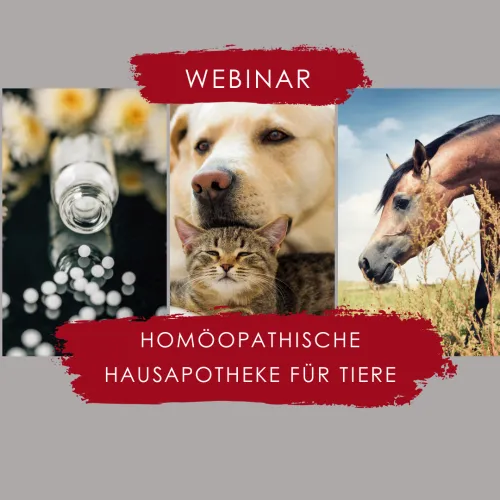
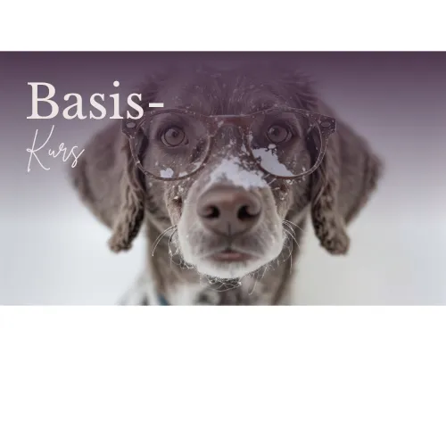
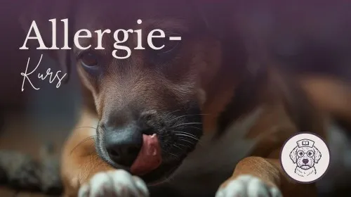

Die homöopathische Hausapotheke für Tiere
Produktprofil · Marktplatz-Daten 2026-10-10 · Verkaufsseiten-Recherche 2026-10-10 · Kategorien: Animals & Pets, Health & Fitness
- Die homöopathische Hausapotheke für Tiere ist ein/e Mitgliederbereich & Videokurs in Animals & Pets und Health & Fitness, vertrieben über den Digistore24-Marktplatz von Anbieter PetraSchwarz, gelistet seit 2023-07-09.
- Listenpreis $174.21; Digistore24 meldet — Checkout-Konversion, — Stornierungsquote und 20 % Affiliate-Provision.
- Verdienst pro Verkauf (Affiliate): $34.84 (Anbieter-seitige Statistik, keine Prognose).
Interesse an Die homöopathische Hausapotheke für Tiere? Aktueller Preis, Boni und Garantiebedingungen finden Sie auf der offiziellen Seite des Anbieters:
Offizielle Verkaufsseite ansehen
Affiliate-Link (Werbung) — wir verdienen ggf. eine Provision, ohne Mehrkosten für Sie.

Marktplatz-Daten
| Produkttyp | Mitgliederbereich & Videokurs |
|---|---|
| Preis | $174.21 (Single payment, Installment) |
| Affiliate-Provision | 20 % |
| Garantie/Rückgabe | Laut Verkaufsseite des Anbieters — vor dem Kauf auf der offiziellen Seite prüfen |
| Anbieter | PetraSchwarz (gelistet seit 2023-07-09) |
| Marktplatz-Statistiken* | Checkout-Konversion — · Stornoquote — · Verdienst/Verkauf $34.84 |
* Anbieter-seitige Statistiken von Digistore24; sie hängen von der Traffic-Qualität ab und sind keine Prognose.
Marktplatz-Beschreibung des Anbieters
In dieser 4-teiligen Webinarreihe geht es um die Behandlung von akuten Problemen beim Tier mit dem passenden homöopathischen Mittel. Du lernst wie die Homöopathie entstanden ist und sich entwickelt hat. Du wirst die Basics einer homöopathischen Mittelauswahl und Dosierung lernen und auch was man diesbezüglich unbedingt beachten oder vermeiden sollte. Du kannst nach diesem Webinar verschiedene gäng…
Von der Verkaufsseite des Anbieters
Seitentitel: Homöopathische Hausapotheke 26
Einstiegstext
Nach dieser Webinarreihe sind all diese und noch mehr Fragen beantwortet. Zudem gibt es auch noch einige Fallbeispiele aus meiner Praxis um das gelernte zu festigen und einen Quiz in dem du selbst überprüfen kannst, wie dein Wissensstand ist.
Nach Anmeldung und Bezahlung über Digistore geht Dir automatisch die Rechnung zu.
Falls eine Teilnahmebescheinigung gewünscht wird, schreibe mir bitte NACH der Veranstaltung eine Mail mit der Info für welches Webinar sie sein soll.
Ich bin seit seit 19 Jahren in eigener Praxis tätig und sorge für das Wohl von Hunden, Katzen und Pferden. Neben der klassischen Homöopathie ist auch die Ernährungsberatung und die Bioresonanz ein Bestandteil meiner Praxistätigkeit
Fragen, die die Verkaufsseite beantwortet
- Die homöopathische Hausapotheke für Tiere - wie geht es weiter ?
Recherche-Methode: rohes HTML · 413 Wörter · Qualität: medium · recherchiert am 2026-10-10. Vollständige Recherche-Datei (MD) ↗
Wie Produkte dieser Art geliefert werden
Allgemeiner Hinweis zu diesem Produkttyp (keine anbieterspezifische Anleitung): Videokurse laufen über einen Mitgliederbereich: nach dem Checkout erhalten Sie Zugangsdaten per E-Mail und können die Lektionen in Ihrem eigenen Tempo streamen. Für die genaue Anwendung von Die homöopathische Hausapotheke für Tiere sind die offizielle Verkaufsseite und die enthaltenen Materialien maßgeblich.
Gut zu wissen
- Keine Garantie-Formulierung in unserer Recherche gefunden — bestätigen Sie das Rückgabefenster auf der offiziellen Seite, bevor Sie kaufen.
- Marktplatz-Zahlen (Preis, Provision, Konversion, Stornoquote) — Quelle: offizielle Digistore24-Marktplatz-API (Affiliate-Sicht), Stand 2026-10-10. Gegenprüfung: Marktplatz-Suche nach Produkt-ID 506679.
- Verkaufsseiten-Zitate — Quelle: https://akademie.tierheilpraxis-ps.de/homoeopathischehausapotheke26, abgerufen 2026-10-10 (Methode: rohes HTML). Verify: offizielle Seite öffnen.
- Garantie / Rückgabe — vom Anbieter festgelegt; vor dem Kauf auf der Verkaufsseite bestätigen.
- Nicht von uns geprüft: Produktqualität, Ergebnisse, Testimonials — kein Praxistest für dieses Listing durchgeführt.
Häufige Fragen zu Die homöopathische Hausapotheke für Tiere
Antworten aus dem Marktplatz-Snapshot (2026-10-10) und der Verkaufsseiten-Recherche (2026-10-10); Anbieteraussagen sind inline gekennzeichnet.
Was ist Die homöopathische Hausapotheke für Tiere?
Die homöopathische Hausapotheke für Tiere ist ein Angebot des Typs „Mitgliederbereich & Videokurs" im Digistore24-Marktplatz, Anbieter: PetraSchwarz, gelistet seit 2023-07-09. Eingepflegt unter Tiere & Haustiere und Gesundheit & Fitness. Digistore24 wickelt Checkout, Lieferung und Rückgaben ab.
Wie viel kostet Die homöopathische Hausapotheke für Tiere?
Der Digistore24-Marktplatz listet es für $174.21 (single payment, installment). Preise legt der Anbieter fest und können sich ändern — der Marktplatz-Eintrag oben zeigt den Schnappschuss; die offizielle Verkaufsseite zeigt den aktuellen Preis.
Gibt es eine Geld-zurück-Garantie für Die homöopathische Hausapotheke für Tiere?
Unsere Verkaufsseiten-Recherche hat keine explizite Garantie-Formulierung gefunden. Viele Digistore24-Produkte bieten 60 Tage Geld-zurück, aber das legt jeder Anbieter selbst fest — bestätigen Sie es auf der offiziellen Verkaufsseite, bevor Sie kaufen.
Ist Die homöopathische Hausapotheke für Tiere seriös?
Wir bewerten keine Seriosität — wir veröffentlichen überprüfbare Zahlen: Anbieter PetraSchwarz (gelistet seit 2023-07-09), Checkout-Konversion —, Stornoquote —, Affiliate-Verdienst/Verkauf $34.84 (alles Anbieter-seitige Marktplatz-Statistiken). Lesen Sie unsere 6-Punkte-Bewertungsmethode und entscheiden Sie anhand der Zahlen — oder diskutieren Sie Die homöopathische Hausapotheke für Tiere auf GitHub.
Wo kann ich Die homöopathische Hausapotheke für Tiere sicher kaufen?
Nur über die offizielle Verkaufsseite, die auf dieser Seite verlinkt ist (Checkout und Rückgaben laufen über Digistore24). Prüfen Sie dort Preis und Garantie vor der Bestellung. Der Link ist ein Affiliate-Link — der Kauf unterstützt diese Website ohne Mehrkosten für Sie.
Wie erhalte ich Die homöopathische Hausapotheke für Tiere nach der Zahlung?
Der Checkout läuft über Digistore24: Nach der Zahlung erhalten Sie Ihren Zugang oder Download per E-Mail und in Ihrem Digistore24-Kundenkonto. Lieferdetails für diesen Produkttyp: Videokurse laufen über einen Mitgliederbereich: nach dem Checkout erhalten Sie Zugangsdaten per E-Mail und können die Lektionen in Ihrem eigenen Tempo streamen. Bei Problemen kann der Digistore24-Käufersupport Ihre Bestellung wiederherstellen.
Ähnliche Angebote in Tiere & Haustiere
BAUCH, BEINE, PO – das Trainingsprogramm für dein Freizeitpferd In nur 8 Wochen Muskulatur, Balance & Tragkraft aufbauen, für ein gesundes, motiviertes Pfer
Zertifizierter Katzenverhaltensberater / Katzencoach – Fernlehrgang der aCATemy® Bewirb eine professionelle Online-Ausbildung für alle, die Katzenverhalten fund
Diese Schulung ist hilft Haltern von Herdenschutzhunde in Familienhand, ein glückliches und harmonischen Zusammenleben zu ermöglichen. Empfehlen Sie das einziga

So wird aus Lesen echte Hilfe vor Ort! Im Guide erfahren Sie: Warum Tierschutz heute wichtiger ist den je Was wirklich im Tierschutzalltag so passiert Die 5 grö
Weitere Angebote von PetraSchwarz
Krebs - eine Diagnose die keiner hören möchte. Von einer Sekunde auf die andere hat man das Gefühl die Welt geht unter! Aber ist das wirklich so? Gibt es wirkli
Die homöopathische Hausapotheke für Tiere ist auch gelistet in
Gesundheit & Fitness (577 Produkte)
Ähnliche Preislage in Tiere & Haustiere

Futterklarheit – Wissen statt Werbung. Klarheit statt Verwirrung. Hundeernährung ist voller widersprüchlicher Empfehlungen, Trends und Werbeversprechen. BARF od

Allergien beim Hund verstehen – statt nur Symptome zu betrachten Juckreiz, Hautprobleme, wiederkehrende Ohrenentzündungen oder Verdauungsbeschwerden führen viel
BARF verstehen statt einfach Prozentmodelle nachmachen Viele Hundehalter möchten ihren Hund frisch und roh ernähren, stoßen beim BARFen aber schnell auf widersp
Ähnliche Suchanfragen
Wo Sie es sich ansehen können
Wo Sie es sich ansehen können
Aktuelle Preise, Garantie und Boni finden Sie auf der offiziellen Verkaufsseite:
Offizielle Verkaufsseite ansehen
Das ist ein Affiliate-Link (Werbung) — kaufen Sie darüber, verdienen wir ggf. eine Provision, ohne Mehrkosten für Sie.
Quellen & weiterführende Informationen
- Offizielle Verkaufsseite (aktueller Preis, Garantie, Boni): akademie.tierheilpraxis-ps.de/homoeopathischehausapotheke26 (Affiliate-Link)
- Öffentliche Digistore24-Produktseite: digistore24.com/product/506679
- Vollständige Recherche-Datei (Markdown, versioniert): content/products/45409-die-hom-opathische-hausapotheke-f-r-tiere.md
- Marktplatz-Kategorie: Tiere & Haustiere
Wie wir Produkte wie Die homöopathische Hausapotheke für Tiere bewerten
Sechs Prüfungen, ausschließlich mit offiziellen Marktplatz-Zahlen. Die vollständige Bewertungsmethode lesen · unsere Recherche-Standards & Kennzeichnung.
Fragen oder eigene Erfahrungen mit Die homöopathische Hausapotheke für Tiere?
Praxis-Tests veröffentlichen wir erst, nachdem wir ein Produkt selbst gekauft haben — aber Ihre Erfahrung hilft anderen Lesern: Diskussion zu Die homöopathische Hausapotheke für Tiere auf GitHub starten/verfolgen. Falsche Zahl gefunden? Korrektur melden — jede Seite zeigt ihre Datenstände, Korrekturen gelten für die ganze Website.